Para familias · En lectura fácil · Con pictogramas
La agenda que no acaba en un cajón
Un plan de 4 semanas para que la agenda visual se use cada día y dure. Con hoja de seguimiento, tarjetas «¿y si…?»
y lista de repuestos.
Pictogramas: Sergio Palao. ARASAAC (Gobierno de Aragón). CC BY-NC-SA.
Licencia CC BY-NC-SA 4.0 ideducando.es
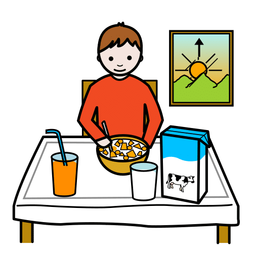
Desayuno
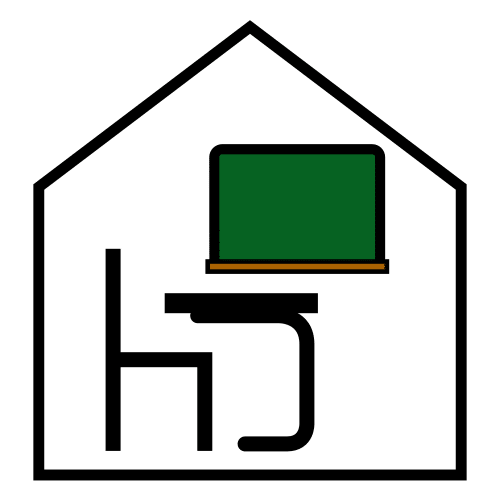
Al cole
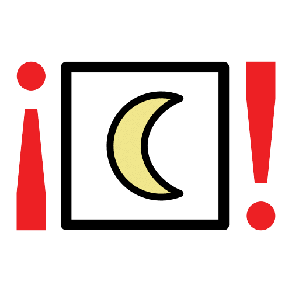
A dormir
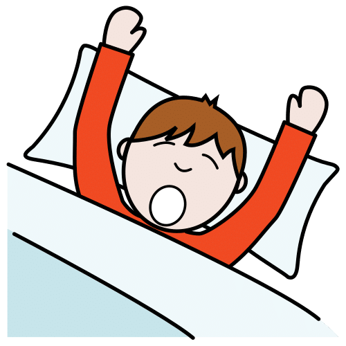
Me despierto
¡Terminado!
Semana 1Semana 2Semana 3Semana 4
Un plan de4semanas
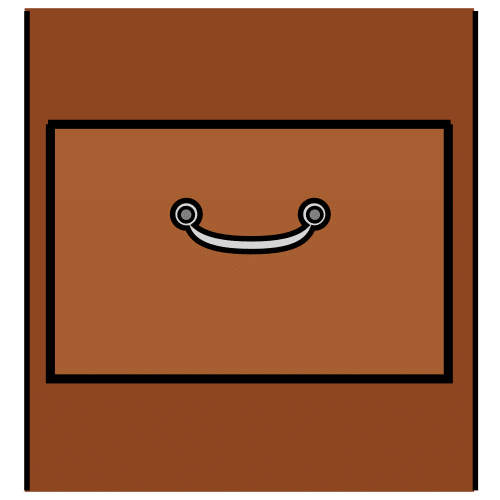
Empezamos
¿Por qué acaba en un cajón?
Muchas familias preparan una agenda visual con ilusión. A las pocas semanas, la agenda acaba en un cajón. No es culpa
vuestra: pasa por cosas que tienen arreglo.
Lo que pasaLo que funciona
Es muy larga desde el primer día.Empezar con 3 momentos del día.
Solo la mira la persona adulta.El peque mueve las tarjetas.
Está lejos, donde nadie pasa.Colgarla a la altura de sus ojos, donde pasan las cosas.
Se rompe una pieza y no hay otra.Tener un sobre de repuestos.
Cada persona la usa a su manera.Toda la familia la usa igual.
Solo se usa cuando hay problemas.Usarla cada día, también en los ratos tranquilos.
El plan, de un vistazo
Semana 1Tres momentos
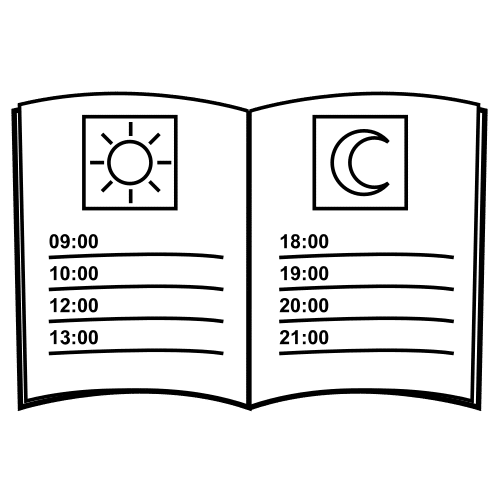
Semana 2La rutina entera
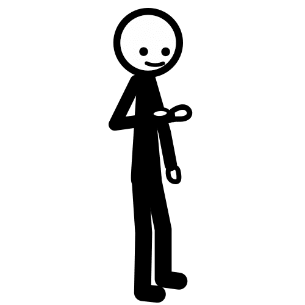
Semana 3Menos ayuda
Semana 4Revisar y decidir
El secreto está en empezar pequeño y en usarla cada día.
De dónde sale: las agendas visuales funcionan con peques con autismo (Knight, Sartini y Spriggs, 2015). Las familias
que dejan los apoyos con pictogramas cuentan que eran trabajo de más y que el peque no los usaba. Ayuda meterlos en las
rutinas del día (Moorcroft, Scarinci y Meyer, 2021).
Preparamos
Antes de empezar
Marcad cada casilla cuando lo tengáis listo.
La agenda. Sirven las «Rutinas visuales para casa» o la «Agenda visual con pictogramas». Las dos son gratis en
ideducando.es.
Tres momentos del día que pasen siempre. Por ejemplo: levantarse, comer y dormir.
El sitio. A la altura de sus ojos y cerca de donde pasa la rutina. Siempre en el mismo sitio.
Dos sobres: «¡Terminado!» y «Repuestos». Las etiquetas están en la página 9.
Toda la familia, de acuerdo. Contad el plan a quien cuida al peque: abuelos, canguro y hermanos mayores.
La hoja de seguimiento de la página 7, colgada cerca y con un lápiz al lado.
Cada vez que uséis la agenda
Señala la tarjeta y di una frase corta: «Ahora, desayunar».
Haced la actividad.
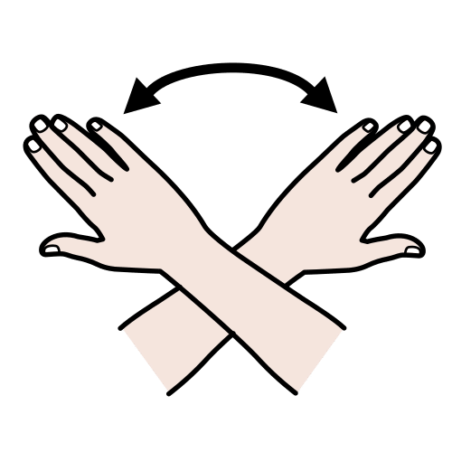
Al acabar, el peque pasa la tarjeta a «¡Terminado!».
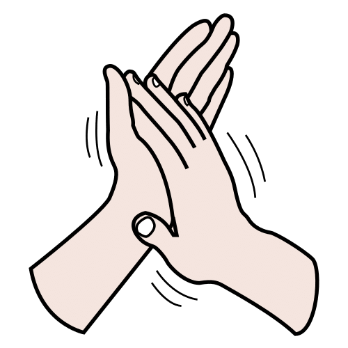
Felicítale: «¡Lo has hecho tú!».
Truco: mientras la usáis, hablad poco. Así el peque aprende a mirar la agenda para saber qué toca.
De dónde sale: los pasos siguen la guía de apoyos visuales de AFIRM, de la Universidad de Carolina del Norte (2024), y el
método de McClannahan y Krantz (2010), que pide pocas palabras para que el peque no dependa de ellas.
1
Semana 1
Tres momentos
Usamos la agenda 3 veces al día, todos los días.
Poned solo las tarjetas de esos 3 momentos. Las demás, en el sobre.
Antes de cada momento, id juntos a la agenda.
Si no sabe qué hacer, ponte detrás y guía su mano hasta la tarjeta, sin hablar.
Al terminar, que pase la tarjeta a «¡Terminado!».
Cada noche, marcad la hoja de seguimiento.
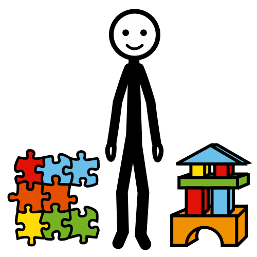
Truco: que uno de los 3 momentos sea algo que le guste. Así la agenda anuncia cosas buenas.
Pasad a la semana 2 si la habéis usado 5 días o más.
2
Semana 2
La rutina entera
Seguimos una rutina completa con la agenda.
Elegid una rutina. Por ejemplo, la de la mañana.
Empezad con 4 tarjetas. Si va bien, pasad a 6.
Al empezar, mirad la agenda juntos: «Primero esto y después esto».
Usad siempre las mismas tarjetas, en el mismo orden.
Seguid también con los 3 momentos de la semana 1.
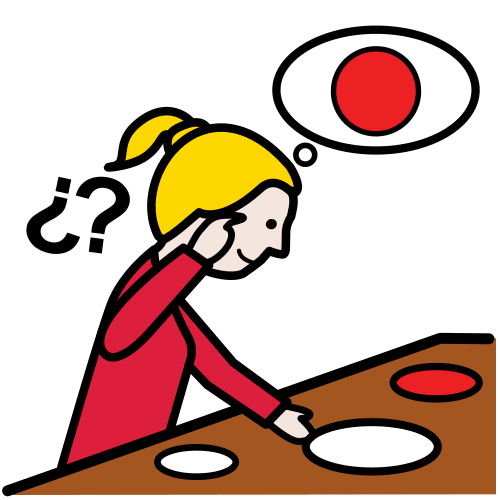
Truco: si no entiende una tarjeta, cambiadla por una foto de vuestra casa. Por ejemplo, de su cepillo de
dientes.
Pasad a la semana 3 si sigue la rutina casi todos los días, aunque necesite ayuda.
Si una semana no sale, repetidla. Cada peque tiene su ritmo. De dónde sale: las agendas que funcionan empiezan por pocas
tarjetas y crecen poco a poco (McClannahan y Krantz, 2010; Knight, Sartini y Spriggs, 2015).
3
Semana 3
Menos ayuda
Ayudamos un poco menos cada día.
Antes de ayudar, espera 5 segundos. Cuenta en silencio.
Sube por la escalera de ayudas: cada escalón es un poco menos de ayuda. Cuando le salga bien 3 días seguidos, sube al siguiente.
Escalón 1Guío su mano.
Escalón 2Le toco el brazo.
Escalón 3Señalo la agenda.
Escalón 4Solo espero. ¡Lo hace solo!
Más ayudaMenos ayuda
Si se atasca, vuelve al escalón de antes. Es normal.
Cuando lo haga sin ayuda, celébralo y pinta la estrella en la hoja.
4
Semana 4
Revisar y decidir
Miramos cómo ha ido y elegimos el siguiente paso.
Mirad juntos la hoja de seguimiento. Contad los círculos y las estrellas.
Hablad de 2 cosas: qué ha funcionado y qué cambiáis.
Elegid el siguiente paso:
Seguimos igual otro mes.
Añadimos otra rutina.
Ponemos más tarjetas.
Pedimos ayuda al cole.
Truco: contad al cole lo que hacéis en casa. Si en casa y en clase usáis las mismas tarjetas, mejor.
De dónde sale: esperar unos segundos antes de ayudar y retirar la ayuda poco a poco son prácticas con evidencia para
peques con autismo (Hume y otros, 2021).
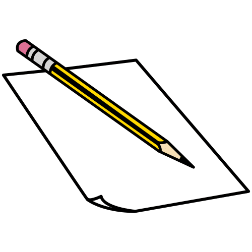
Para colgar junto a la agenda
Hoja de seguimiento
Pinta
el círculo si hoy habéis usado la agenda.Pinta
la estrella si ha pasado una tarjeta sin ayuda.
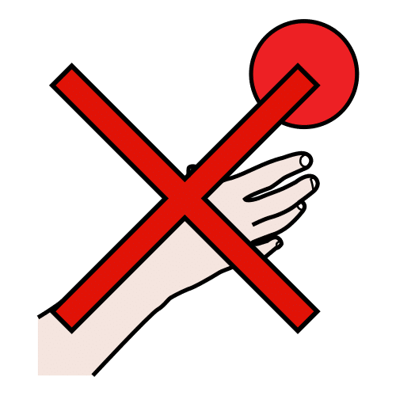
¿Y si…?
¿Y si no la quiere usar?
Que la última tarjeta sea algo que le guste.
Que sea él o ella quien pase las tarjetas a «¡Terminado!».
Usadla vosotros también, delante del peque.
Si no entiende un pictograma, poned una foto.
¿Y si…?
¿Y si se pierden piezas?
Guardad las tarjetas que no uséis en el sobre «Repuestos».
Imprimid 2 veces las tarjetas que más usáis.
Si falta una, dibujadla en una tarjeta en blanco mientras imprimís otra.
Por la noche, contad juntos las tarjetas.
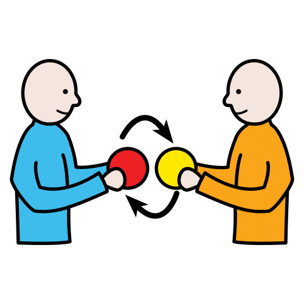
¿Y si…?
¿Y si hay un día distinto?
Avisad antes, con la agenda delante.
Quitad la tarjeta que ya no toca y poned la nueva en su sitio.
Mantened igual todo lo que podáis, como la hora de dormir.
Para el médico o un cumpleaños, ayuda una historia social.
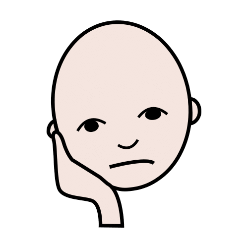
¿Y si…?
¿Y si ya no la mira?
Puede ser buena señal: quizá ya se sabe la rutina.
Dejadla colgada igual, unas semanas más.
Probad con una rutina nueva o con más tarjetas.
Dadle un papel: que prepare la agenda de mañana con vosotros.
Recorta por la línea de puntos. Haz el agujero en el círculo de cada tarjeta y únelas con la anilla.
¿Y si…?
¿Y si se enfada cuando toca algo que no le gusta?
Poned justo después algo que le guste: primero baño, después cuento.
Avisad 5 minutos antes de que acabe lo que le gusta. Un reloj de arena ayuda.
No quitéis tarjetas como castigo.
Esperad a que esté tranquilo o tranquila y volved a la agenda.
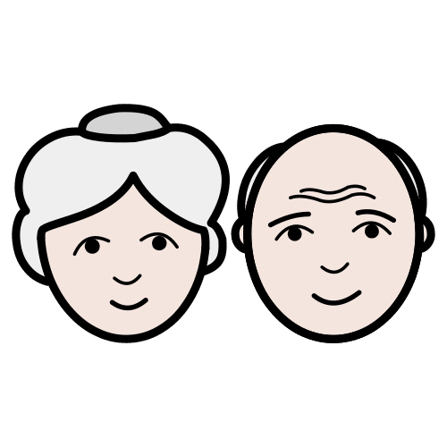
¿Y si…?
¿Y si estamos fuera de casa?
Haced una tira pequeña con 3 tarjetas y llevadla en la mochila.
Dejad una copia en casa de los abuelos.
Explicad cómo se usa: con 2 minutos basta.
Usad las mismas tarjetas en todas las casas.
Nuestro truco
¿Y si…
¡Terminado!Aquí van las tarjetas de lo que ya hemos hecho.
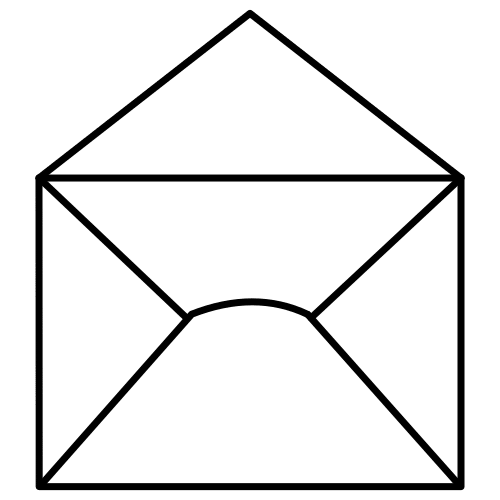
RepuestosTarjetas de más, velcro y masilla.
Las etiquetas se pegan en los sobres con pegamento de barra. No hace falta plastificarlas.
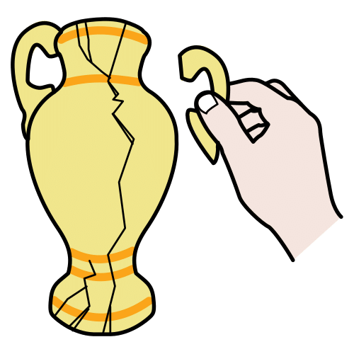
Para que dure
Lo que más se rompe y su arreglo
Lo que pasa
Qué hacer
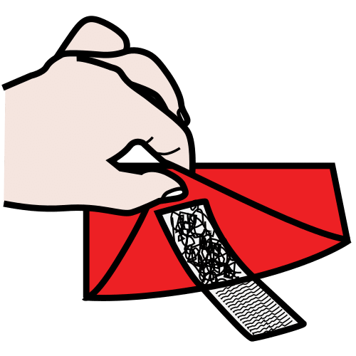
El velcro se despega.
Limpia la zona con un paño seco. Pega velcro nuevo y apriétalo un rato con el dedo. Rugoso en la agenda y suave en la tarjeta.
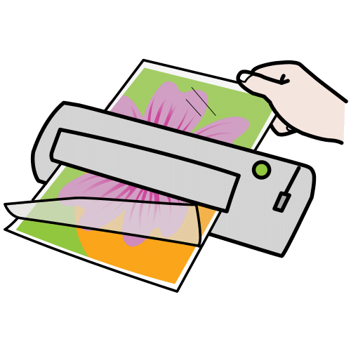
La tarjeta se dobla o se pela.
Plastifícala con funda de 125 micras y deja 3 mm de plástico alrededor. Redondea las esquinas.
Se pierde una tarjeta.
Saca su copia del sobre «Repuestos». Si no hay, dibújala en una tarjeta en blanco.
La agenda se cae.
Pon masilla nueva: 4 bolitas, en una pared lisa y limpia.
Cambia la rutina.
Haz la tarjeta nueva con una foto o un dibujo. Guarda la vieja en el sobre, por si vuelve.
Qué guardar en el sobre «Repuestos»
10 círculos de velcro suave y 10 rugosos, de 2 cm.
Una copia de las 6 tarjetas que más usáis.
2 tarjetas en blanco y un rotulador.
4 bolitas de masilla.
Cuidado: las tarjetas y el velcro son piezas pequeñas. Guardadlos lejos de quien todavía se lleva cosas a la
boca.
Para quien quiera saber más
De dónde sale
Esta guía no sustituye a los profesionales que acompañan a vuestro peque. Si tenéis dudas, preguntad en el cole o en
vuestro centro de atención temprana.
Las agendas visuales y cómo enseñarlas
Knight, V., Sartini, E. y Spriggs, A. D. (2015). Evaluating visual activity schedules as evidence-based practice for
individuals with autism spectrum disorders. Journal of Autism and Developmental Disorders, 45(1), 157-178.
doi.org/10.1007/s10803-014-2201-z. Las agendas visuales, práctica con evidencia.
Hume, K. y otros (2021). Evidence-based practices for children, youth, and young adults with autism: Third generation
review. Journal of Autism and Developmental Disorders, 51(11), 4013-4032.
doi.org/10.1007/s10803-020-04844-2. Apoyos visuales, ayudas y espera antes de ayudar.
Sam, A. y AFIRM Team (2024). Visual Supports, con su guía para familias. Universidad de Carolina del Norte en
Chapel Hill. afirm.fpg.unc.edu. Cómo preparar, enseñar y revisar un apoyo visual.
McClannahan, L. E. y Krantz, P. J. (2010). Activity Schedules for Children with Autism: Teaching Independent
Behavior (2.ª ed.). Woodbine House. Empezar con pocas tarjetas, guiar desde detrás y retirar la ayuda.
Grey, I., Healy, O., Leader, G. y Hayes, D. (2009). Using a Time Timer to increase appropriate waiting behavior in a
child with developmental disabilities. Research in Developmental Disabilities, 30(2), 359-366.
doi.org/10.1016/j.ridd.2008.07.001. Un reloj visible ayuda a esperar.
Por qué las familias dejan los apoyos
Moorcroft, A., Scarinci, N. y Meyer, C. (2021). «I've had a love-hate, I mean mostly hate relationship with these PODD
books»: parent perceptions of how they and their child contributed to AAC rejection and abandonment.
Disability and Rehabilitation: Assistive Technology, 16(1), 72-82.
doi.org/10.1080/17483107.2019.1632944.
Moorcroft, A., Scarinci, N. y Meyer, C. (2020). How do external stakeholders contribute to parent rejection and the
abandonment of AAC systems? International Journal of Language & Communication Disorders, 55(1), 59-69.
doi.org/10.1111/1460-6984.12502. La familia necesita compañía al empezar.
Cómo está escrita
UNE 153101:2018 EX. Lectura fácil. Pautas y recomendaciones para la elaboración de documentos.
Gortázar Díaz, M. (s. f.). Guía Apoyos Visuales. Asociación Autismo Sevilla. Centro de Recursos Online de la
Junta de Castilla y León: educa.jcyl.es/crol.
Los símbolos pictográficos utilizados son propiedad del Gobierno de Aragón y han sido creados por Sergio Palao para
ARASAAC (https://arasaac.org), que los distribuye bajo Licencia Creative Commons BY-NC-SA. Esta guía es de IdEducando y
tiene la misma licencia, CC BY-NC-SA 4.0: puedes compartirla y adaptarla citándonos, sin venderla y con la misma
licencia. Es gratis y lo será siempre.
 Señala la tarjeta y di una frase corta: «Ahora, desayunar».
Señala la tarjeta y di una frase corta: «Ahora, desayunar».